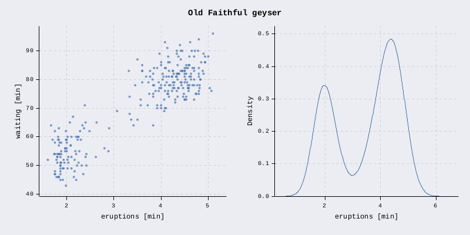

cljplot2
cljplot2
cljplot2 is a Clojure plotting library rendering static images with clojure2d. A plot is a plain map: data (a sequence of maps), a mapping from data to dimensions, a vector of charts, labels, scales and a theme. There is no DSL and no grammar of graphics: you build and transform the map with ordinary Clojure. Statistics come from fastmath, scales from wadogo.
(ns book.index
(:require [cljplot2.chart :as chart]
[cljplot2.core :as plot]
[notebook-utils :as nu]))How this book is organised
Use cases - one chapter per family of the R Graph Gallery merged with From Data to Viz: distribution, correlation, ranking, part of a whole, evolution, flow, and colours. Each use case has one canonical example here.
Galleries - figures replicated from other sources: cljplot extras, the lattice book, Vega-Lite and Vega galleries. Figures are reproduced by content (same data, same idea), not pixel by pixel, and link to the use case they illustrate.
Every example names its source and its dataset with the dataset’s licence. All code is Clojure written for cljplot2; no code of the original sources is copied. The datasets are in notebooks/data/ (listed in datasets.edn), not in the library.
How to read an example
Each example is the code followed by the image it renders. Examples use these aliases: cljplot2.core as plot (plot/render-image returns a java.awt.image.BufferedImage, which the notebook shows) and cljplot2.chart as chart. Data is read with nu/dataset.
A first example: Old Faithful
Waiting time between eruptions against eruption duration (left) and the distribution of eruption durations (right). Two plots sharing one dataset, arranged side by side.
Source: R Graph Gallery - Scatter, Density. Data: Old Faithful geyser eruptions, R datasets package faithful (Härdle 1991; Azzalini & Bowman 1990); licence: Part of R (GPL-2 | GPL-3).
(def faithful (nu/dataset :faithful))(plot/render-image
(plot/arrange [{:data faithful
:mapping {:x :eruptions :y :waiting}
:charts [(chart/scatter)]
:labels {:x "eruptions [min]" :y "waiting [min]"}}
{:data faithful
:mapping {:x :eruptions}
:charts [(chart/density)]
:labels {:x "eruptions [min]"}}]
{:columns 2 :title "Old Faithful geyser"})
{:width 800 :height 400})
source: notebooks/book/index.clj